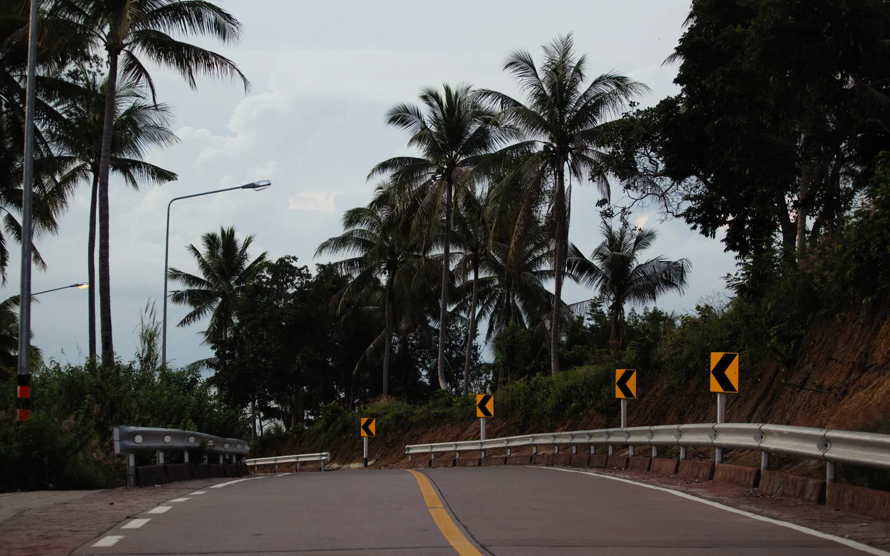

IGR · Puerto Iguazú · Misiones
Traslados y excursiones en Iguazú, con chofer y horario confirmado
Te buscamos en el Aeropuerto Cataratas, en tu hotel o donde estés. Autos, vans, minivans y buses para 1 a 50 pasajeros, los 365 días del año.
Reservar por WhatsApp Ver los vehículos
- 24 hTodos los días
- 1 a 50Pasajeros por viaje
- 3 paísesArgentina, Brasil y Paraguay
01 — La flota
Elegí el vehículo ideal
Cuatro opciones según cuántos viajan y cuánto equipaje llevan.
Chofer propio y vehículo habilitado
02 — Tu tramo
Tocá dos puntos y te mostramos el viaje
Distancias y tiempos estimados entre los destinos que más nos piden. Elegí origen y destino y armamos la ficha del traslado.
Diagrama de referencia · las distancias no están a escala
03 — Cómo funciona
De la puerta del avión a la puerta del hotel

01 · Reservás-
01
Nos pasás el vuelo y el hotel
Un mensaje de WhatsApp con número de vuelo, horario y cuántos viajan. Te confirmamos el vehículo y el precio final en el momento.
-
02
Te esperamos con el cartel
Seguimos el vuelo: si aterriza tarde, el chofer espera igual. Salís de la manga y encontrás tu nombre en la puerta de llegadas.
-
03
Viajás y te dejamos en la puerta
Aire acondicionado, espacio real para el equipaje y un chofer que conoce la zona. Sin escalas, sin esperar a que se llene la combi.
04 — Excursiones
Los paseos que salen de Puerto Iguazú
Salidas con chofer y vehículo propio. Las entradas a los parques se pagan aparte, en cada acceso.
Operadora local con base en Puerto Iguazú. Un solo contacto para el traslado, la excursión y el cruce de frontera.
Armar mi viaje05 — Por qué nosotros
No somos una app: somos los que manejan
Iguazú Travel es una operadora local. El que te contesta el WhatsApp conoce al chofer que te va a buscar, y los dos saben a qué hora aterriza tu vuelo.
- Choferes con licencia profesional Vehículos habilitados para transporte de pasajeros y seguro vigente.
- Seguimos tu vuelo Si se demora, el chofer espera. No pagás nada extra por eso.
- 24 horas, los 365 días Vuelos de madrugada, cruces a Foz y salidas antes del amanecer.
- Privado de verdad El vehículo es tuyo y de los tuyos: no compartís el viaje con desconocidos.
06 — Pasajeros
Lo que nos escriben después del viaje
“El vuelo de Aerolíneas llegó 23:50 en vez de 21:30 y el chofer estaba igual, con el cartel. Nos dejó en el hotel sobre la ruta 12 en veinte minutos.”
“Éramos once, con valijas y dos changuitos de bebé. Vino una minivan y entró todo. Al otro día nos llevaron al lado brasileño y nos esperaron toda la tarde.”
“Coordinamos el traslado de un contingente de 42 chicos desde el aeropuerto. Puntualidad clavada y un chofer que se bancó todo el viaje con paciencia.”
07 — Contacto
Escribinos y te armamos el viaje
Contanos qué día llegás, cuántos son y a dónde van. Te respondemos con el vehículo, el horario y el precio final.
WhatsApp · 24 horas +54 9 3757 31-5657
- BasePuerto Iguazú, Misiones · Argentina
- CoberturaAeropuerto Cataratas (IGR), Puerto Iguazú, Parque Nacional Iguazú, Hito Tres Fronteras, Foz do Iguaçu, Aeropuerto de Foz (IGU), Ciudad del Este y Minas de Wanda.
- IdiomasEspañol y portugués
Preguntas frecuentes
¿Con cuánta anticipación conviene reservar?
Con 48 horas alcanza para la mayoría de los traslados. En temporada alta (enero, Semana Santa y julio) conviene avisar con una semana, sobre todo para grupos de más de 12 pasajeros.
¿Qué pasa si mi vuelo se demora?
Seguimos el número de vuelo. Si aterriza más tarde, el chofer espera sin costo adicional. Si el vuelo se cancela, reprogramamos el traslado sin cargo.
¿Tienen sillita para bebé?
Sí, con aviso previo. Pedila cuando reservás indicando la edad del nene o la nena para llevar la butaca que corresponde.
¿Cruzan a Brasil y a Paraguay?
Sí. Hacemos Foz do Iguaçu, el Aeropuerto Internacional de Foz (IGU) y Ciudad del Este. Para cruzar la frontera cada pasajero necesita su DNI o pasaporte vigente; los menores, la autorización correspondiente.
¿Cuánto se tarda del aeropuerto al centro de Puerto Iguazú?
Alrededor de 30 minutos, unos 21 kilómetros por la Ruta Nacional 12. Del aeropuerto al Parque Nacional Iguazú son apenas 10 minutos.
Te esperamos en Iguazú
Decinos a qué hora aterrizás y del resto nos ocupamos nosotros
Un mensaje alcanza para tener el traslado confirmado, con chofer asignado y horario de encuentro.
Coordinar mi traslado